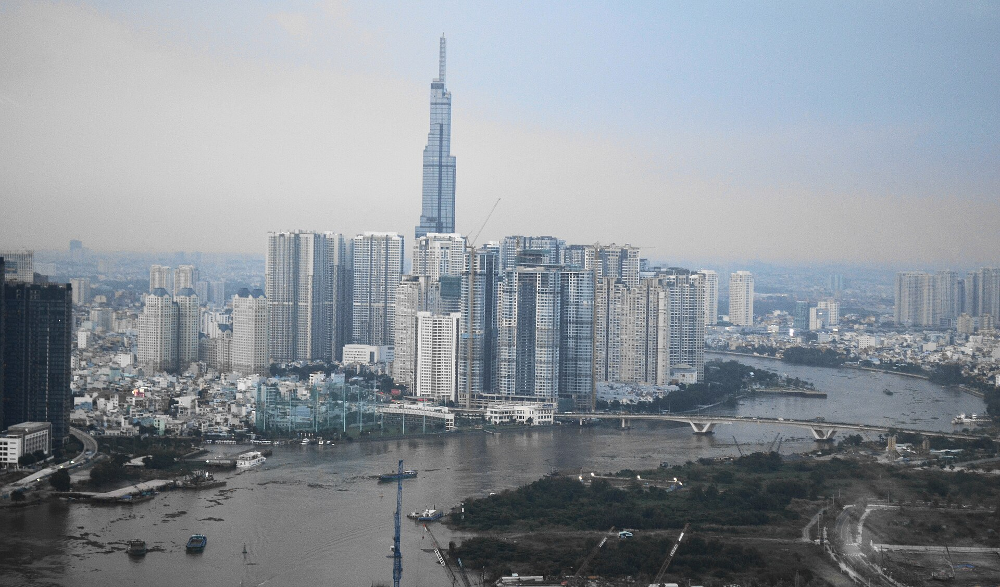

Xây dựng Technocom tại Ukraine
Từ sản phẩm mì ăn liền Mivina, Technocom phát triển thành doanh nghiệp thực phẩm có chỗ đứng. Thành tựu này quan trọng vì tạo nền tảng tài chính và kinh nghiệm vận hành quốc tế.
Thành tựu
Giá trị của một thành tựu không chỉ nằm ở quy mô, mà còn ở năng lực mở đường, tạo tiêu chuẩn mới và kéo theo sự phát triển của cả hệ sinh thái.
Từ sản phẩm mì ăn liền Mivina, Technocom phát triển thành doanh nghiệp thực phẩm có chỗ đứng. Thành tựu này quan trọng vì tạo nền tảng tài chính và kinh nghiệm vận hành quốc tế.
Vinpearl và Vincom góp phần phát triển các mô hình du lịch nghỉ dưỡng, trung tâm thương mại và đô thị tích hợp. Việc hợp nhất năm 2012 tạo nên một tập đoàn tư nhân quy mô lớn.
Hệ sinh thái mở rộng sang y tế, giáo dục và nhiều dịch vụ khác. Ý nghĩa nằm ở việc thử nghiệm cách doanh nghiệp tư nhân tham gia cung cấp hạ tầng đời sống với quy mô lớn.
VinFast thiết lập tổ hợp sản xuất tại Hải Phòng và phát triển dải xe điện. Đây là nỗ lực hiếm có của doanh nghiệp Việt trong ngành có chuỗi cung ứng, vốn và tiêu chuẩn kỹ thuật rất cao.
Việc được Forbes ghi nhận có ý nghĩa biểu tượng đối với khu vực kinh tế tư nhân Việt Nam, phản ánh sự xuất hiện của doanh nghiệp nội địa ở quy mô toàn cầu.
Landmark 81 là một ví dụ dễ nhận biết về ảnh hưởng của hệ sinh thái Vingroup đến diện mạo đô thị. Tuy nhiên, thành tựu kiến trúc chỉ là phần nổi. Phía sau đó là năng lực huy động vốn, phối hợp đối tác, quản lý tiến độ và phát triển hạ tầng đồng bộ.
